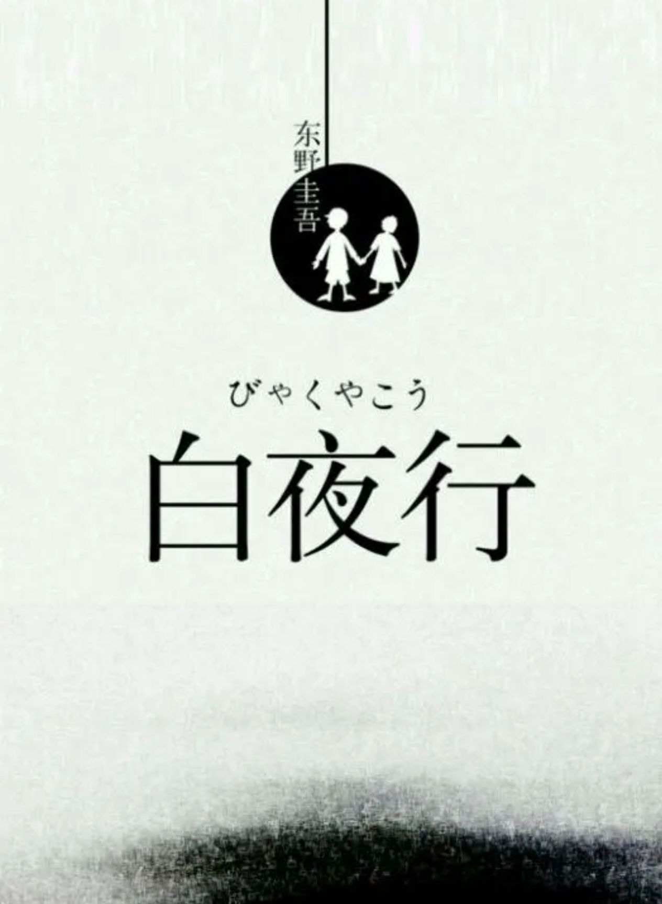

那些年陪我走过高中的书（点击图片进入书本介绍）
多年以后，面对行刑队，奥雷里亚诺·布恩迪亚上校将会回想起父亲带他去见识冰块的那个遥远的下午。——《百年独孤》
不必太纠结于当下，也不必太忧虑未来，当你经历过一些事情的时候，眼前的风景已经和从前不一样了。——《1Q84》

世上有两样东西不可直视，一是太阳，二是人心。
我的生活就像在白夜里行走——《白夜行》
我深怕自己本非美玉，故而不敢加以刻苦琢磨，却又半信自己是块美玉，故又不肯庸庸碌碌，与瓦砾为伍。于是地脱离人世，一任愤，恨日益助长怯弱的自尊心。其实，人人都是驯兽师，性情即是猛兽。——《山月记》